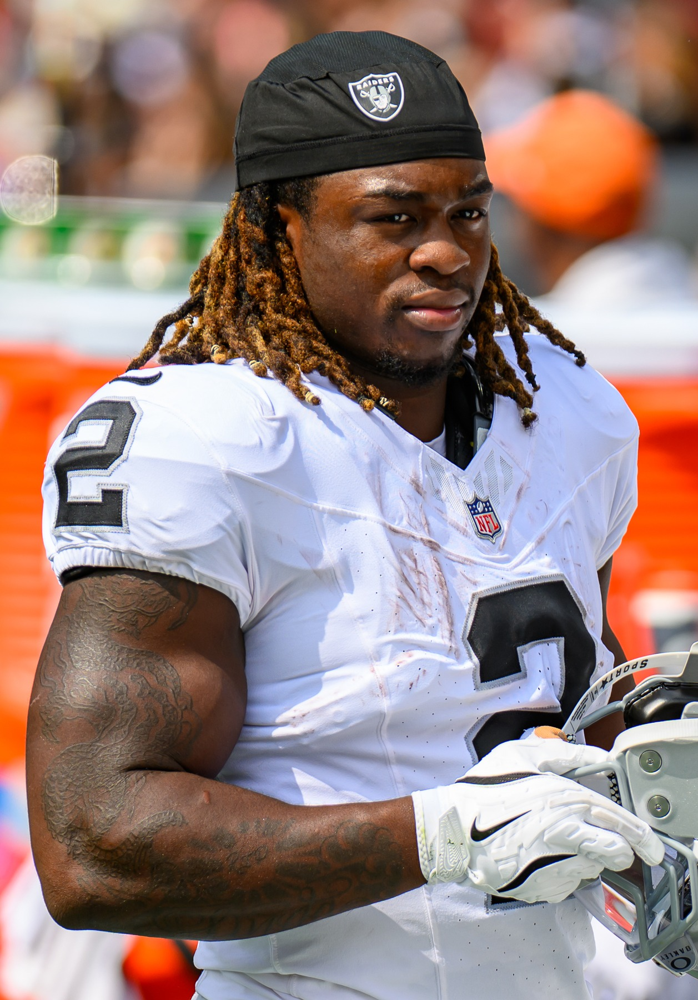

Raiders 35, Saints 27: Three and Oh, and I Forgot What This Felt Like
Down 11 in the third quarter at the Superdome, then four Saints turnovers in the fourth, three Kirk Cousins touchdown passes and Brock Bowers back like he never left. The Raiders are 3 and 0 for the first time since 2021.

The last time the Raiders started a season 3 and 0 it was 2021, and I remember calling my dad and telling him this was finally the year. That team snuck into the playoffs and lost in Cincinnati, and it's still the only playoff game this franchise has played since the trucks left Oakland. After that? Six and 11. Eight and 9. Four and 13. And last year's 3 and 14, which I mostly watched through my fingers.
So forgive me if I don't know how to act right now.
The Raiders went into the Superdome, fell behind by 11 in the third quarter, and walked out 35 to 27 winners. Three and oh. I said it out loud in my kitchen just to hear how it sounds. It sounds weird. I like it.
| Team | 1 | 2 | 3 | 4 | Final |
|---|---|---|---|---|---|
| Las Vegas | 3 | 13 | 6 | 13 | 35 |
| New Orleans | 6 | 7 | 14 | 0 | 27 |
I had given up. Sort of.
Confession time. When Noah Fant caught that 16 yarder to make it 27 to 16 midway through the third, I got up and went to do the dishes. I left the game on, I'm not a monster, but I was done. Tyler Shough had just thrown his fourth touchdown pass, all four to tight ends, and the Saints were playing their home opener like it was January. The old Raiders brain kicked in. Oh, here we go again.
Then Mike Washington Jr. ripped off a 36 yard touchdown run less than three minutes later and I walked back into the living room holding a wet plate. The two point try failed, 27 to 22, whatever. We were alive.
The fourth quarter I've been waiting four years for
The defense took this game from them. Four turnovers in the fourth quarter. Four!
First Shough coughs one up, the Raiders jump on it, and Kirk Cousins finds Cody White from four yards out with 9:21 left. 28 to 27. Another two point try fails and I genuinely didn't care.
The very next Saints possession, rookie Hezekiah Masses jumps a throw and brings it back 35 yards, and a few minutes later Cousins hits Brock Bowers from the four. 35 to 27. Bowers, in his first game of the season after that knee, caught 10 balls for 116 yards like he'd never been gone. I missed that guy so much it's embarrassing.
Then Jeremy Chinn punches the ball out of Shough's hands. And with 53 seconds left and New Orleans taking one last shot, Juwan Johnson puts it on the turf and that's the game. I screamed. The dog left the room again. He's going to have to get used to this.

Kirk, I take it back
Week 1 I yelled at Cousins for forcing deep balls into coverage. I'll eat that one. Twenty two of 33 for 248 yards, three touchdowns, no picks, and that's three straight games with three touchdown passes. He's playing like a veteran who knows he's keeping the seat warm for somebody and wants to make it really, really hard to give up.
Fernando Mendoza still hasn't taken a snap. Good. Leave it. Klint Kubiak is 3 and 0 as a head coach and I'm not touching a thing. Nobody move, nobody change the channel, nobody wash anything.
And Jeanty had his quietest day of the year and they still scored 35. That's new. Last season if Jeanty didn't carry us, nobody did.
It's been a long time
I'm not going to pretend this is the old Raiders. It's not the Coliseum. They play in Las Vegas now and a lot of us in the East Bay are still sore about that, me included. But the jersey in my closet is the same Tim Brown my dad wore, and for the first time in years, putting it on Sunday morning didn't feel like a chore.
Miami at home, 27 to 13. At the Chargers, 26 to 14. At New Orleans, 35 to 27. These guys are playing well. They're winning different ways, too, which is how you know it might be real. Raider Nation, the part of it still hanging on around here, finally has something to be excited about, and I'd honestly forgotten what that felt like.
The Niners won too, by the way, 36 to 30 over Arizona, so both Bay Area football teams are 3 and 0. Go ahead and read that sentence again. How we got here is in the Week 1 column and the season preview, and the rest of the football lives on the NFL page.
Kansas City comes to Vegas next Sunday at 1:25. Of course it's Kansas City. I'm not ready. I'll be watching anyway.
More coverage: Bay Area NFL · Bay Area Sports · Bay Area Sports Blog home